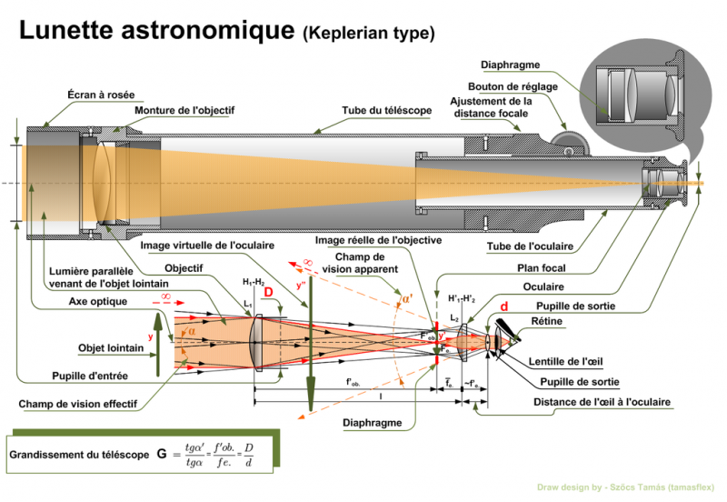
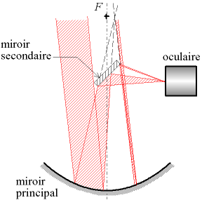
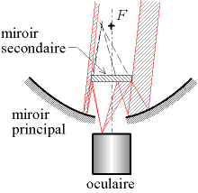
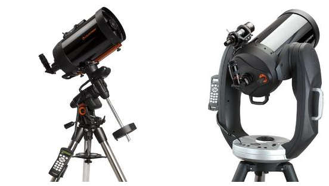
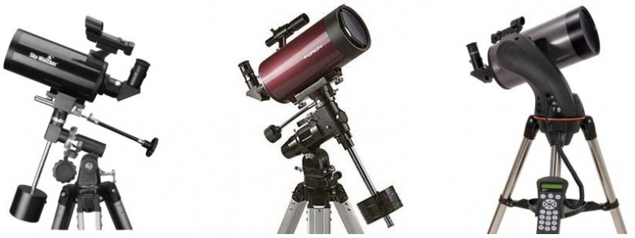
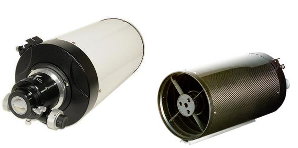

De fait, l'Univers regorge de bien des trésors. Pour vous "raprocher" d'eux visuellement, vous aurez besoin d'un télescope et il y en a de plusieurs types :
- Lunette astronomique ou réfracteurs

- Télescope ou réflecteur


- Le telescope catadioptrique


